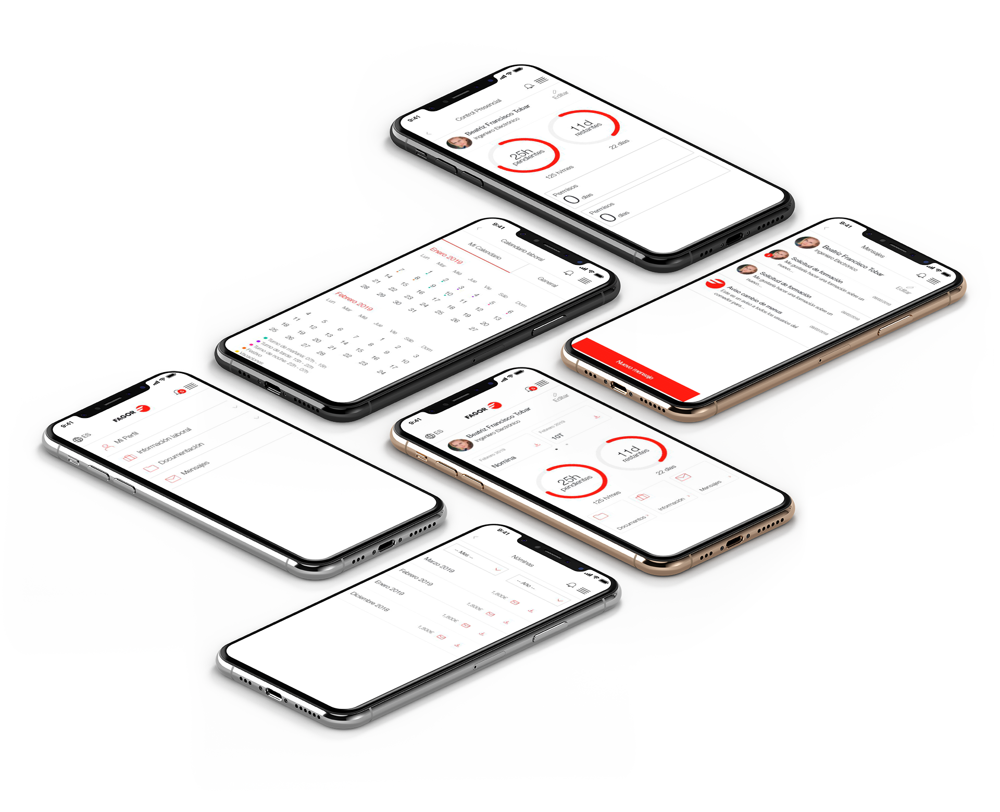

FAGOR INTRANET
Prototipado | Diseño | HTML | CSS | Javascript
Descripción
Intranet para empleados de Fagor donde pueden consultar las horas pendientes, saldo de vacaciones disponibles, descarga de documentación, comunicación interna, etc.
Esta intranet se podrá consultar tanto desde desktop como desde mobile. Para ello además de realizar un diseño responsive se va a construir una aplicación
FUNCIONES
- UX/UI Design
- Visual Design
- Front end designer (HTML/SASS/JAVASCRIPT)
Problemática:
Los unicos requisitos que teníamos para este proyecto era una análisis de las funciones con las que tenía que contar la aplicación desde el punto de vista técnico.
El objetivo era traducir ese punto de vista técnico a unas interfaces más amigables para el usuario.
El proceso
En primer lugar se realizan paper sketches, se trabaja junto al equipo técnico para validar que los sketches cumplen las funciones básicas definidas por el cliente y para llegar a una solución valida tanto técnicamente como a nivel de experiencia de usuario.
Una vez definida la estructura básica se generan wireframes con las interacciones básicas de la aplicación.
Prototipo básico Ver prototipo en Figma
Se testean los wireframes con el cliente final para comprobar si es capaz de realizar las tareas definida.s
Finalmente el departamento de comunicación de Fagor realiza una serie de ajustes estéticos.
El siguiente paso es traducir los diseños a HTML y CSS para generar una demo que se pueda presentar y validar con el cliente.
Estos HTML se pasarán al departamento de programación para que empiecen a generar las funcionalidades necesarias.
Puede ver el resultado final en http://www.demo0.attest.es
